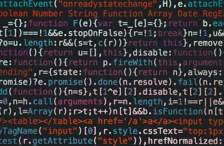

Intro
Software duplication in its basics is piracy or as 
the name states the duplication of
software. Software
can be duplicated with the proper permission however the main part of this site will be focused on the
illegal duplication of software. First this site will focus on how to protect software from duplication.
Next it will show the different softwares that can be used to find duplicated code. Finally it will show
the legality of duplicating code and the punishments of duplicating code.
Citation
These are the documents that were used to help create this website.
- Baker, B. S. (1995, July). On finding duplication and near-duplication in large software systems. In
Reverse Engineering, 1995., Proceedings of 2nd Working Conference on (pp. 86-95). IEEE.
- Baker, B. S. (1997). Parameterized duplication in strings: Algorithms and an application to software
maintenance. SIAM Journal on Computing, 26(5), 1343-1362.
- Gosler, J. R. (1985, August). Software protection: Myth or reality?. In Conference on the Theory and
Application of Cryptographic Techniques (pp. 140-157). Springer, Berlin, Heidelberg.
- Goldreich, O., & Ostrovsky, R. (1996). Software protection and simulation on oblivious RAMs. Journal of
the ACM (JACM), 43(3), 431-473.
- Lemley, M. A. (1995). Convergence in the law of software copyright. High Tech. LJ, 10, 1.
- Behrens, B. C., & Levary, R. R. (1998). Practical legal aspects of software reverse engineering.
Communications of the ACM, 41(2), 27-29.
- Malhotra, Y. (1994). Controlling copyright infringements of intellectual property: The case
of computer
software-part one. Journal of Systems Management, 45(6), 32.